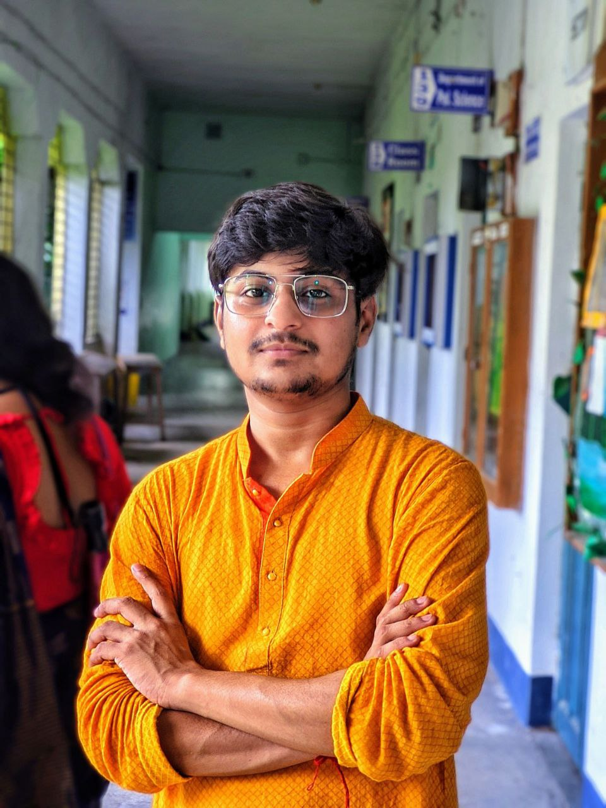

Hi, My name is Rounak
and I am a passionate

About Me
Hello! I'm Rounak Saha, a passionate individual with a diverse skill set in Flutter development, web development,
and web design. Let me tell you a bit about what I do and what drives me:
Flutter Development
As a Flutter developer, I specialize in crafting cross-platform mobile applications that are not only visually stunning but also deliver a seamless user experience. I enjoy leveraging Flutter's rich widget library and hot reload feature to rapidly prototype and iterate on ideas. From building engaging UIs to integrating complex functionality, I take pride in creating robust and responsive mobile apps that cater to various user needs.
Web Development
In the realm of web development, I am adept at using a range of technologies such as HTML, CSS, JavaScript, and frameworks like React.js and Vue.js. I excel in crafting interactive and user-friendly websites that combine aesthetics with functionality. Whether it's developing responsive layouts, implementing dynamic content, or optimizing performance, I strive to deliver web solutions that elevate the digital presence of businesses and individuals.
Web Design
With a keen eye for design principles and trends, I also delve into web design to ensure that every project I work on not only functions flawlessly but also looks visually appealing. From creating wireframes and mockups to designing user interfaces that prioritize usability and accessibility, I believe in the power of thoughtful design to enhance the overall user experience.
Flutter Development
As a Flutter developer, I specialize in crafting cross-platform mobile applications that are not only visually stunning but also deliver a seamless user experience. I enjoy leveraging Flutter's rich widget library and hot reload feature to rapidly prototype and iterate on ideas. From building engaging UIs to integrating complex functionality, I take pride in creating robust and responsive mobile apps that cater to various user needs.
Web Development
In the realm of web development, I am adept at using a range of technologies such as HTML, CSS, JavaScript, and frameworks like React.js and Vue.js. I excel in crafting interactive and user-friendly websites that combine aesthetics with functionality. Whether it's developing responsive layouts, implementing dynamic content, or optimizing performance, I strive to deliver web solutions that elevate the digital presence of businesses and individuals.
Web Design
With a keen eye for design principles and trends, I also delve into web design to ensure that every project I work on not only functions flawlessly but also looks visually appealing. From creating wireframes and mockups to designing user interfaces that prioritize usability and accessibility, I believe in the power of thoughtful design to enhance the overall user experience.
